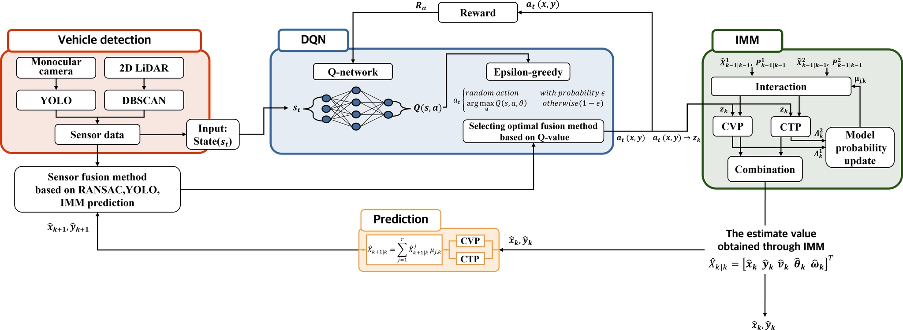
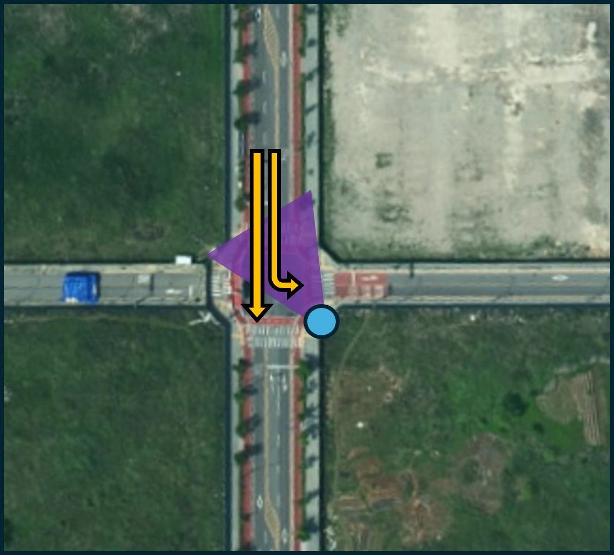
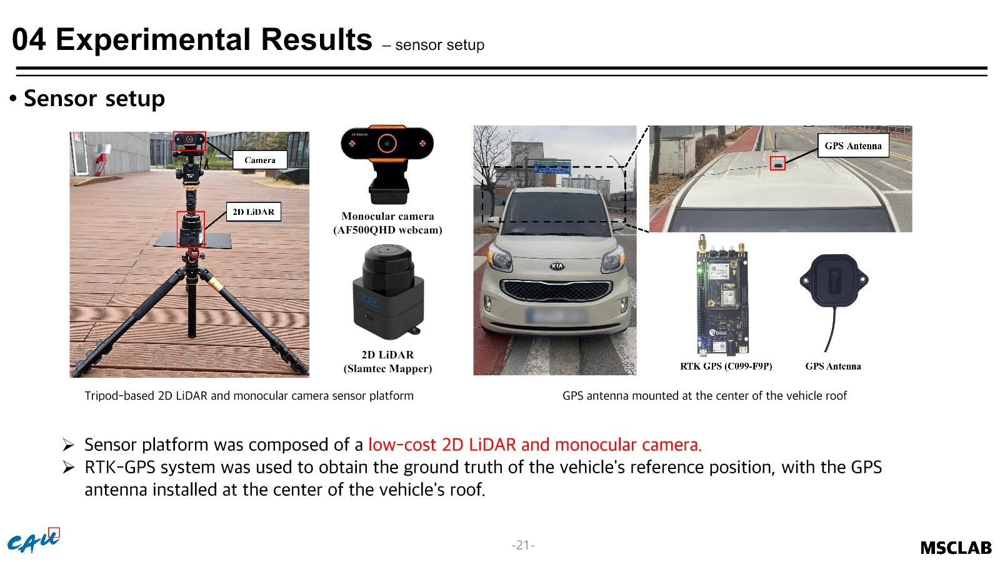
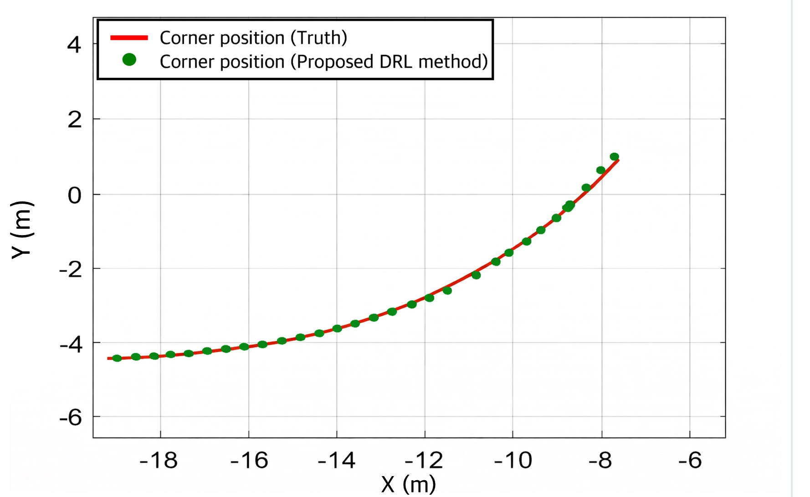

MASTER'S THESIS · SENSOR FUSION
강화학습 기반 카메라-LiDAR 센서융합 객체추적
교차로의 차량 가림과 센서 품질 변화에 대응하기 위한 저비용 도로변 차량 상태추정 시스템. 다섯 가지 위치 후보를 DQN으로 선택하고 IMM으로 위치·속도·방위각 연속 추정.
- 기간
- 2024.09–2025.08
- 담당
- 1인 연구책임 · 전체 설계·구현·검증
- 기술
- YOLO · DBSCAN · RANSAC · DQN · IMM
- 성과
- 석사학위논문 · ICROS · 특허
01 / RESEARCH QUESTION
연구 문제
고정 융합 규칙은 차량 간 가림, 급가감속, LiDAR 이상치처럼 관측 품질이 바뀌는 순간 잘못된 위치를 지속 선택. 시점별 최적 관측을 학습하고 관측 단절 구간을 운동모델로 연결하는 구조 필요.
- 목표저비용 단안 카메라·2D LiDAR 기반 차량 상태 연속 추정
- 연구 질문센서 후보와 추정 후보 가운데 시점별 선택 전략의 학습 가능성 검증
- 검증 범위MATLAB 폐루프 시뮬레이션·서울 마곡동 교차로 현장시험
- 기준값차량 RTK-GPS 기반 위치·속도·진행방향 비교
02 / SYSTEM DESIGN
전체 구조

- 영상 인지YOLO 기반 차량 검출과 영상 방위각 산출
- LiDAR 인지DBSCAN 군집화와 RANSAC 차량 모서리 추출
- 판단추적 오차 최소화를 보상으로 한 DQN 관측 후보 선택
- 추정CVP·CTP 운동모델을 결합한 IMM 상태 갱신
03 / OBSERVATION
관측 후보 설계

- 후보 1RANSAC 두 선분의 교점
- 후보 2·3YOLO 최대·최소 방위각과 RANSAC 선분의 교점
- 후보 4차량 중심과 횡방향으로 가장 가까운 LiDAR 포인트
- 후보 5관측 신뢰 저하 구간의 IMM 예측 위치
04 / FIELD TEST
현장 검증


05 / OCCLUSION
가림 대응


- 확인한 한계가림 직후 잘못된 관측을 유지하는 거리 임계값 방식
- 대응검출 신뢰 저하 시 IMM 예측점 선택
- 복구센서 관측 회복 시 실제 후보로 재전환
06 / RESULT
정량 결과
20.6%
현장 위치 RMSE 감소
동일 데이터의 비교 방법 0.126 m 대비 제안 방법 0.100 m
| 검증 환경 | 비교 방법 | 제안 방법 | 개선율 |
|---|---|---|---|
| MATLAB 시뮬레이션 | 0.043 m | 0.030 m | 30.2% |
| 서울 마곡동 현장시험 | 0.126 m | 0.100 m | 20.6% |

센서 사양을 반영한 시뮬레이션에서 학습한 정책을 추가 재학습 없이 현장 데이터에 적용. 약 73만 원 수준의 단안 카메라·2D LiDAR 조합으로 실도로 성능 확인.
07 / CONTRIBUTION
담당 범위
- 연구 질문 설정과 선행연구 분석
- 센서융합 후보 정의와 DQN 상태·행동·보상 설계
- YOLO·DBSCAN·RANSAC·IMM 추적 파이프라인 구현
- MATLAB 시뮬레이션과 현장 센서 시스템 구성
- RTK-GPS 기준 실험·로그 분석·논문 작성·구두발표
- 특허 기술 정리와 공동발명
08 / OUTPUT
논문·특허
석사학위논문강화학습 기반 단안 카메라와 2D LiDAR 센서융합 알고리즘98쪽 원문ICROS 2025차량 추적을 위한 강화학습 기반 도로변 센서 시스템제1저자·구두발표
특허차량 상태 추정 방법, 이를 수행하는 장치 및 기록매체10-2025-0136289